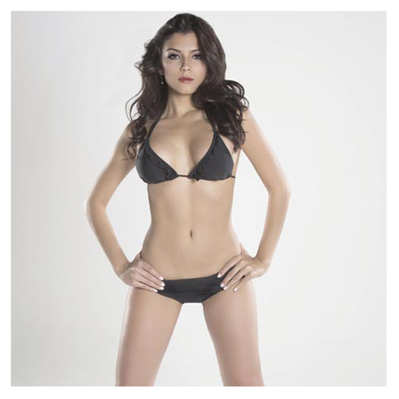

#Batallas
¿Cuál es tu portada favorita?


Portadas revista Mi Gente Tv 2015
Ganador
MIKE BAHÍA
Comentarios:
daniiparamo: La de Mike bahiaaa mil veces.
familiabahiasantander: Por supuesto nuestro capitán @mikebahia.
¿Cuál es tu portada favorita?
Portadas revista Boga 2015

Ganador
ELIANIS GARRIDO
Comentarios:
diegomruiz: Sin duda @elianisgarridozapata.
lamodelsagencia: Sin duda alguna @kathearoca una portada única y diferente